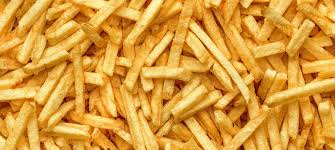

Papas fritas
Receta de papas fritas caseras

Ingredientes
3 o 4 patatas (300g.)
4 dientes de ajo
Aceite de oliva
Sal
Elaboracion (Pasos)
Calentar aceite en una sarten
Añadir patatas cortadas la sal y los ajos
Freir al gusto
Servir en plato